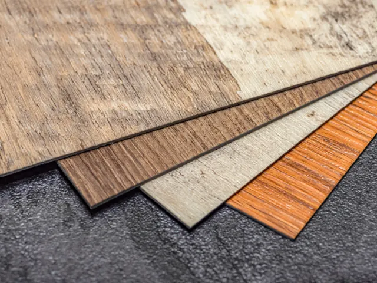

Partnerbijdrage
PVC vloer bestellen met legservice die je planning volgt
Gepubliceerd op 27 februari 2026

Ben je in Nijmegen of omgeving aan het verbouwen, dan wil je voorkomen dat je vloer de vertraging veroorzaakt. Een pvc-vloer bestellen lijkt eenvoudig, tot je ook legservice, ondervloer en voorbereiding van de ondergrond meeneemt. Dan blijkt hoe belangrijk timing en afstemming zijn. Wie een pvc vloer overweegt, ziet dat bestellen en laten leggen vaak een logisch traject vormen, waarbij voorbereiding net zo bepalend is als kleur en patroon.
Begin bij je planning: meten, kiezen en een realistische volgorde
Het bestellen zelf is meestal snel geregeld; de echte winst zit in de volgorde van werken. Je planning draait om drie kernmomenten: inmeten, ondergrond voorbereiden en leggen. Sluit je die stappen goed op elkaar aan, dan voorkom je dat andere werkzaamheden zoals schilderwerk, keukenplaatsing of plinten vertraging oplopen.
Inmeten en snijverlies: waarom globaal meten vaak duur uitpakt
Pvc wordt strak verwerkt, waardoor nauwkeurige maatvoering essentieel is. Vooral bij visgraat of brede planken is snijverlies een belangrijke factor. Een goede inmeting geeft niet alleen inzicht in de benodigde hoeveelheid materiaal, maar ook in de verwachte legtijd. Dat maakt het eenvoudiger om een legdatum te kiezen die past binnen je verbouwing.
Samples en lichtinval: sneller beslissen zonder tijdsdruk
Populaire dessins met natuurlijke tinten en realistische structuren reageren sterk op licht. Wat in een showroom warm oogt, kan thuis door daglicht of kunstlicht anders uitvallen. Door vooraf met samples in je eigen ruimte te testen, neem je een weloverwogen beslissing zonder last-minute wijzigingen vlak voor de legafspraak.
Klik-pvc of plak-pvc: de keuze die je legplanning bepaalt
Het verschil tussen klik-pvc en plak-pvc beïnvloedt niet alleen het product, maar vooral het proces.
Klik-pvc wordt zwevend gelegd en is iets toleranter bij kleine oneffenheden. Plak-pvc vereist een volledig vlakke en stabiele ondergrond. Daardoor is egaliseren bij plak-pvc vaker noodzakelijk. Dat moet tijdig worden ingepland, omdat het aanbrengen en drogen invloed heeft op de uiteindelijke legdatum.

Ondervloer en egaliseren: de basis voor een strak resultaat
Bij pvc bepaalt de ondergrond de kwaliteit van het eindresultaat. Een geschikte ondervloer of een zorgvuldig geëgaliseerde basis is essentieel voor een strakke vloer én een voorspelbare planning. Oneffenheden, oude lijmresten of scheuren kunnen extra voorbereiding vragen.
Breng daarom vooraf in kaart:
- welke ondergrond aanwezig is (beton, anhydriet, hout of tegels);
- of bestaande vloerlagen verwijderd moeten worden;
- of vochtmetingen of aanvullende behandelingen nodig zijn.
Hoe eerder dit duidelijk is, hoe kleiner de kans op aanpassingen op de geplande legdag.
Legservice die je planning volgt: grip op levering en uitvoering
Een legservice werkt het meest efficiënt wanneer je het traject indeelt in vaste stappen: bestelling, levering, voorbereiding, leggen en afwerking. Levertijd en bezorgmoment zijn daarbij net zo belangrijk als de legdatum. Plan niet alleen wanneer er gelegd wordt, maar ook wanneer het materiaal geleverd wordt en waar het tijdelijk kan worden opgeslagen zonder andere werkzaamheden te hinderen.
Vloerverwarming: geschiktheid en opstookprotocol tijdig meenemen
Pvc combineert goed met vloerverwarming, mits de planning klopt. Denk aan het opstook- en afkoelprotocol en de juiste temperatuurinstellingen rondom het leggen. Wordt dit te laat meegenomen, dan kan dat de planning vertragen.
Kosten en verwachtingen vooraf concreet maken
De prijs van een pvc-vloer gaat verder dan een bedrag per m². Neem in je planning ook voorbereiding van de ondergrond, plinten, drempels en afwerking rond kozijnen mee. Door dit vooraf helder te hebben, bijvoorbeeld bij een pvc vloer bestellen bij King Laminaat, voorkom je verrassingen en blijft het traject overzichtelijk.
Door vroeg te kiezen tussen klik of plak, de ondergrond zorgvuldig te beoordelen en levering en legdatum goed op elkaar af te stemmen, houd je controle over je verbouwing en blijft je vloerproject onderdeel van de planning in plaats van een obstakel.
Terug naar de beginpagina